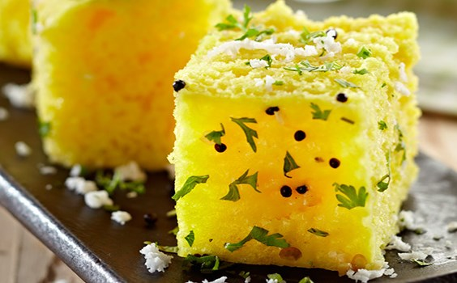
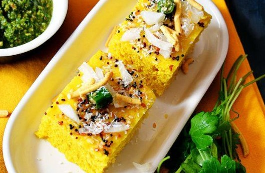
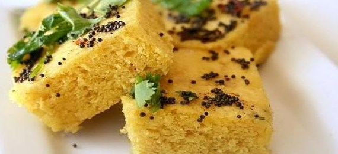
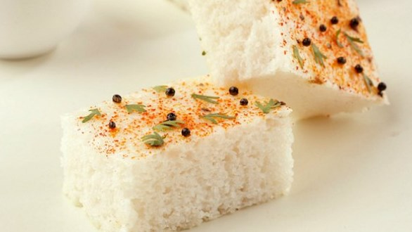
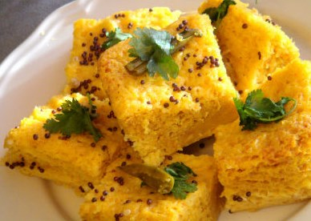

| Sr. No. | Types | Price |
|---|---|---|
| 1 |  Khaman Dhokla |
Rs.140 (500 g) |
| 2 |  Mix Daal Dhokla |
Rs.200/kg |
| 3 |  Rava Dhokla |
Rs.160/kg |
| 4 |  Rice Dhokla |
Rs.60 (100 g) |
| 5 |  Toor Daal Dhokla |
Rs.65/kg |